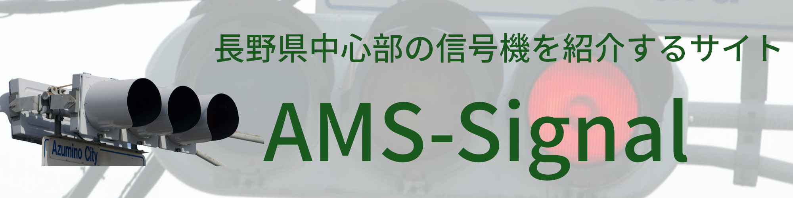

AMS SIGNAL
リンク集
信号機に関するページのリンクを貼ってあります。
GTLibrary By 銀河連邦さん
信号機の館 By TLHall .incさん
信号機を楽しむページ By 低コスト信号機さん
当サイトのバナーについて

サイズ：2000×500
当サイトへのリンク(https://amss.f5.si)はフリーですが、一声かけてもらうと助かります。
また、バナーの縮小拡大は自由ですが、高さ、幅を変えることはご遠慮ください。